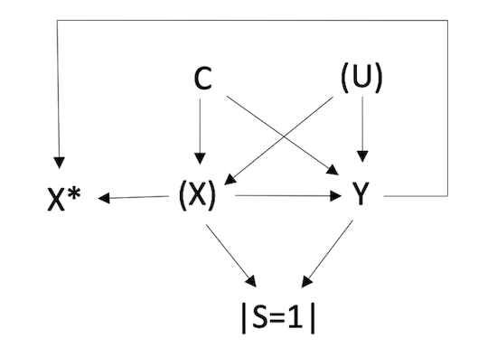

This example demonstrates how multibias is validated
using simulation data. Here we are interested in quantifying the effect
of exposure X on outcome Y. The causal system can be
represented in the following directed acyclic graph (DAG):

The variables are defined:
- X: true, unmeasured exposure
- Y: outcome
- C: measured confounder(s)
- U: unmeasured confounder
- X*: misclassified, measured exposure
- S: study selection
The DAG indicates that there are three sources of bias: 1. There is uncontrolled confounding from (unobserved) variable U. 2. The true exposure, X, is unobserved, and the misclassified exposure X* is dependent on both the exposure and outcome. 3. Lastly, there is collider stratification at variable S since exposure and outcome both affect selection. The study naturally only assesses those who were selected into the study (i.e. those with S=1), which represents a fraction of all people in the source population from which we are trying to draw inference.
A simulated dataframe corresponding to this DAG,
df_uc_emc_sel can be loaded from the multibias
package.
head(df_uc_em_sel)
#> Xstar Y C1 C2 C3
#> 1 1 0 0 0 1
#> 2 0 0 0 0 1
#> 3 0 0 0 0 0
#> 4 0 0 1 0 1
#> 5 1 0 0 0 1
#> 6 1 0 0 1 1In this data, the true, unbiased exposure-outcome odds ratio
(ORYX) equals ~2. However, when we run a logistic regression
of the outcome on the exposure and confounders, we do not observe an
odds ratio of 2 due to the multiple bias sources. We create our
data_observed object, specifying the three biases of
interest, and observe the biased model results.
df_observed <- data_observed(
data = df_uc_em_sel,
bias = c("uc", "em", "sel"),
exposure = "Xstar",
outcome = "Y",
confounders = c("C1", "C2", "C3")
)
print(df_observed)
#> Observed Data
#> ---------------------------------
#> The following biases are present:
#> Uncontrolled Confounding
#> Exposure Misclassification
#> Selection Bias
#> ---------------------------------
#> Exposure: Xstar
#> Outcome: Y
#> Confounders: C1, C2, C3
#> ---------------------------------
#> Data head:
#> Xstar Y C1 C2 C3
#> 1 1 0 0 0 1
#> 2 0 0 0 0 1
#> 3 0 0 0 0 0
#> 4 0 0 1 0 1
#> 5 1 0 0 0 1
summary(df_observed)
#> Note: Estimates are exponentiated (odds ratios) for binary outcomes
#> # A tibble: 5 × 7
#> term estimate std.error statistic p.value conf.low conf.high
#> <chr> <dbl> <dbl> <dbl> <dbl> <dbl> <dbl>
#> 1 (Intercept) 0.164 0.0224 -80.7 0 0.157 0.172
#> 2 Xstar 1.50 0.0154 26.3 2.89e-152 1.45 1.55
#> 3 C1 1.51 0.0155 26.4 1.69e-153 1.46 1.55
#> 4 C2 0.425 0.0235 -36.4 1.02e-290 0.406 0.445
#> 5 C3 1.43 0.0211 17.1 2.49e- 65 1.38 1.49The function multibias_adjust() can be used to
“reconstruct” the unbiased data and return the exposure-outcome odds
ratio that would be observed in the unbiased setting.
Models for the missing variables (U, X, S) are used to facilitate this data reconstruction. For the above DAG, the corresponding bias models are:
- logit(P(U=1)) = α0 + α1X + α2Y
- logit(P(X=1)) = δ0 + δ1X* + δ2Y + δ2+jCj
- logit(P(S=1)) = β0 + β1X* + β2Y + β2+jCj
where j indicates the number of measured confounders.
To perform the bias adjustment, it is necessary to obtain values of
these bias parameters. Potential sources of these bias parameters may
include validation data, estimates in the literature, and expert
opinion. For purposes of demonstrating the methodology, we will obtain
the exact values of these bias parameters. This is possible because we
have access to the data of missing values that would otherwise be absent
in real-world practice. This source data is available in multibias as
df_uc_emc_sel_source.
u_model <- glm(U ~ X + Y,
family = binomial(link = "logit"),
data = df_uc_em_sel_source
)
x_model <- glm(X ~ Xstar + Y + C1 + C2 + C3,
family = binomial(link = "logit"),
data = df_uc_em_sel_source
)
s_model <- glm(S ~ Xstar + Y + C1 + C2 + C3,
family = binomial(link = "logit"),
data = df_uc_em_sel_source
)In this example we’ll perform probabilistic bias analysis,
representing each bias parameter as a draw from a Normal distribution.
This allows us to account for our uncertainty in the “true” value of the
bias parameters. We will leverage bootstrap sampling, which is built
into multibias_adjust() to obtain a confidence interval
that incorporates both uncertainty from random error and uncertainty
from systematic error (our bias parameters). Each loop iteration will
thus have slightly different values for the bias parameters.
We create our bias_params object, bringing in the model
results we determined above.
bp <- bias_params(
coef_list = list(
u = c(
rnorm(1, mean = u_model$coef[1], sd = summary(u_model)$coef[1, 2]),
rnorm(1, mean = u_model$coef[2], sd = summary(u_model)$coef[2, 2]),
rnorm(1, mean = u_model$coef[3], sd = summary(u_model)$coef[3, 2])
),
x = c(
rnorm(1, mean = x_model$coef[1], sd = summary(x_model)$coef[1, 2]),
rnorm(1, mean = x_model$coef[2], sd = summary(x_model)$coef[2, 2]),
rnorm(1, mean = x_model$coef[3], sd = summary(x_model)$coef[3, 2]),
rnorm(1, mean = x_model$coef[4], sd = summary(x_model)$coef[4, 2]),
rnorm(1, mean = x_model$coef[5], sd = summary(x_model)$coef[5, 2]),
rnorm(1, mean = x_model$coef[6], sd = summary(x_model)$coef[6, 2])
),
s = c(
rnorm(1, mean = s_model$coef[1], sd = summary(s_model)$coef[1, 2]),
rnorm(1, mean = s_model$coef[2], sd = summary(s_model)$coef[2, 2]),
rnorm(1, mean = s_model$coef[3], sd = summary(s_model)$coef[3, 2]),
rnorm(1, mean = s_model$coef[4], sd = summary(s_model)$coef[4, 2]),
rnorm(1, mean = s_model$coef[5], sd = summary(s_model)$coef[5, 2]),
rnorm(1, mean = s_model$coef[6], sd = summary(s_model)$coef[6, 2])
)
)
)The data_observed and bias_params objects
are specified as inputs of multibias. In addition, we will
indicate that we want results ran over bootstrap samples.
multibias_adjust(
data_observed = df_observed,
bias_params = bp,
bootstrap = TRUE,
bootstrap_reps = 10,
level = 0.95
)
#> $estimate
#> [1] 2.033976
#>
#> $ci
#> [1] 1.962694 2.088289We arrive at an estimate of the effect of X on Y of approximately 2, correctly corresponding to the relationship that was built into the data. This showcases the power of multibias to allow researchers to arrive at valid causal effect estimates in the presence of missing or incomplete data.